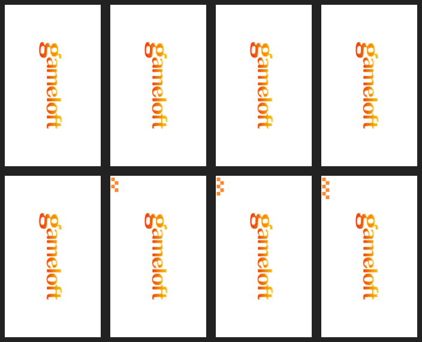
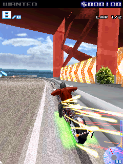
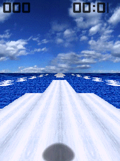

Rendering + audio proof
Asphalt 4: Elite Racing
WVGA rendering reaches gameplay with a captured PCM audio track.
View proof ↗PocketHLE is a high-level emulator for Windows CE and Windows Mobile games. It runs the original executable and reimplements the APIs it needs on the host.

Not a full Windows CE virtual machine. PocketHLE intercepts the boundary between a game and its system DLLs, then implements only what the game actually uses.
Run original Windows CE / Windows Mobile executables without shipping Microsoft system DLLs.
Load PE32 applications through the Unicorn CPU backend, with a trace-only stub backend for diagnostics.
Render legacy framebuffer titles and software OpenGL ES 1.x games through the same core.
Use the CLI for reproducible runs, the egui desktop launcher, or the Android game library.

WVGA rendering reaches gameplay with a captured PCM audio track.
View proof ↗
Boots through the software OpenGL ES layer to the title screen.
View proof ↗
The Motorola Q9 run covers continuous rendering and submitted audio.
View proof ↗
The original ARM Windows Mobile target reaches an in-game scene.
View proof ↗Every new compatibility result belongs in the repository as a reproducible run, a frame capture, or a focused API fix.
Report compatibility ↗